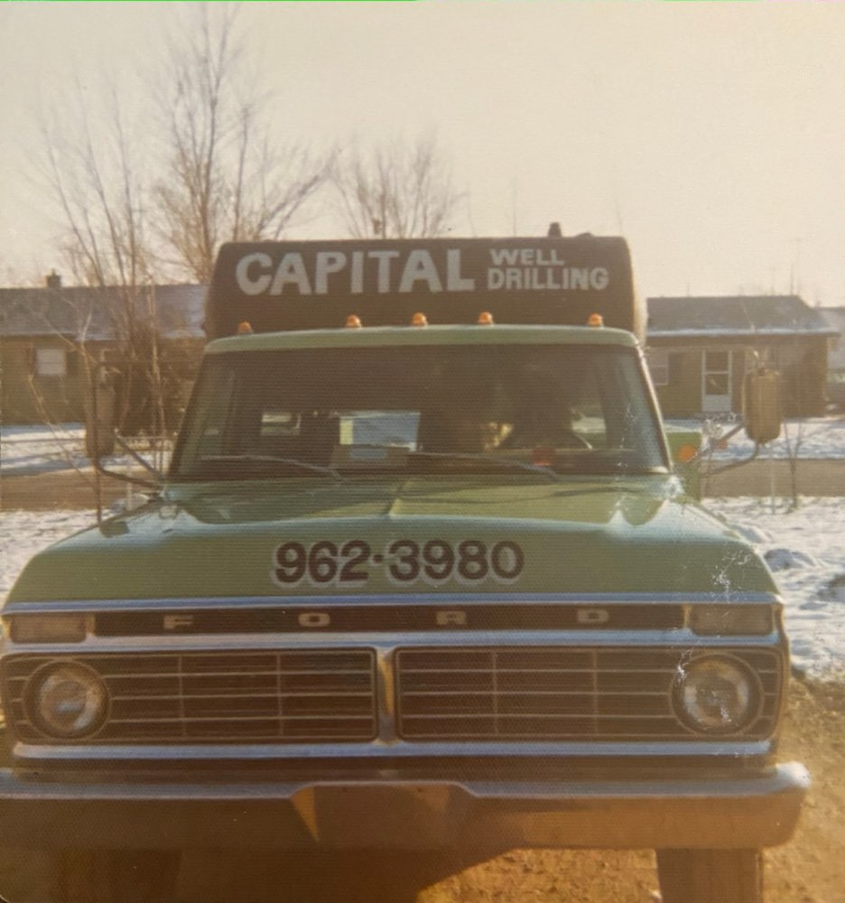
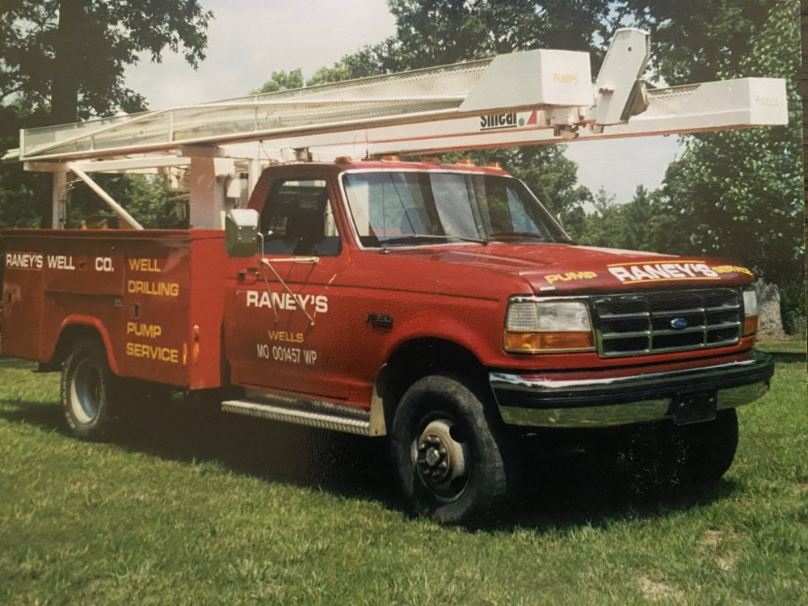
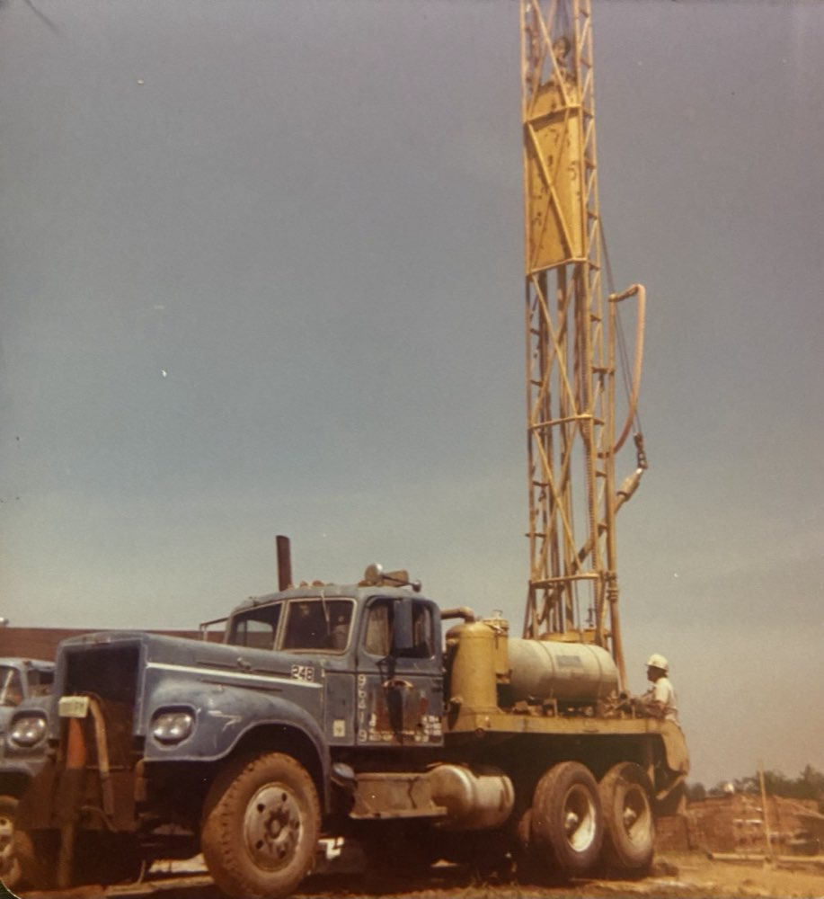
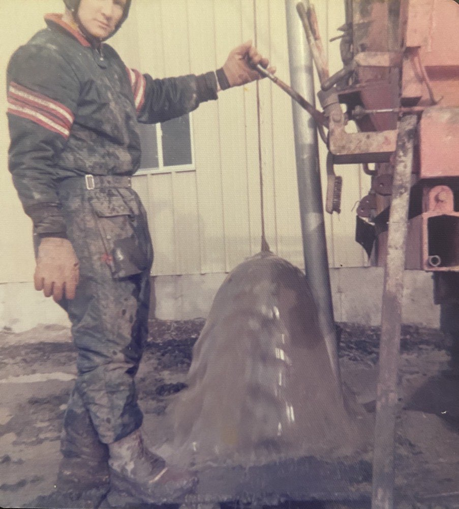

Pump installation
New pumps installed right, for homes and commercial systems.
- Submersible well pumps
- Jacuzzi pumps
- Water pump installation
Doniphan · Poplar Bluff · Southeast Missouri
Well pump installation, repair and maintenance, pressure tanks and water softeners for homes and businesses. A family business that has been servicing pumps for over 50 years.

Effortless flow, unmatched reliability
When your well or pump isn’t performing, Raney’s skilled, licensed technicians diagnose the problem and fix it properly, at a fair price. As an owner-operated company, you get prompt answers and personal attention, whether it’s a new pump installation or a repair that keeps your water coming.
What we do
New pumps installed right, for homes and commercial systems.
Emergency well pump service, low water pressure and worn-out parts.
Faulty pressure tank or control panel? We replace and set it up.
Hard water problems solved with softeners and water conditioning.
Installation, maintenance and repair of commercial pump systems.
Call and describe it. Fastest service on the Poplar Bluff line.


Our story
It began in March 1972, after a year in Vietnam and a factory job that felt too small. With no business experience, the founder and his wife learned drilling, pumps and tanks on the job, licensed in Illinois, Arkansas and Missouri, and worked seven days a week for many years. In 1981 the name changed to Raney’s Well & Pump Service.
“Today, we are proud to say that our business has thrived for over five decades.”From the Raney family historyRead our history
Through the years






From a customer
Great guy to do business with! Easy to get ahold of! Trustworthy! Experienced! Would definitely recommend.
Caleb C. · Poplar Bluff, Missouri
For the fastest service call the Poplar Bluff line, 573-785-2024. The Doniphan number is 573-996-4070.
Monday to Saturday, 7 am to 7 pm. Sundays by appointment. Appointments are preferred.
Yes. Raney’s services all makes and models of well pumps and water systems.
Yes. Besides residential wells, Raney’s installs, maintains and repairs commercial pump systems.
Southeast Missouri, from the shop in Doniphan (Ripley County) and the Poplar Bluff line.
Yes, Raney’s is state licensed. Jason Raney, who now runs the business, is licensed like his father before him.
Contact
Low pressure, no water, a tank that won’t hold, or hard water. Tell us what’s going on.
3057 Ripley 142E-20, Doniphan, MO 63935
Mon – Sat 7 am – 7 pm · Sundays by appointment